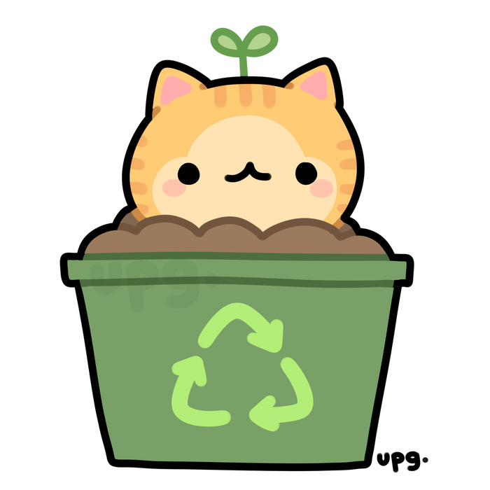
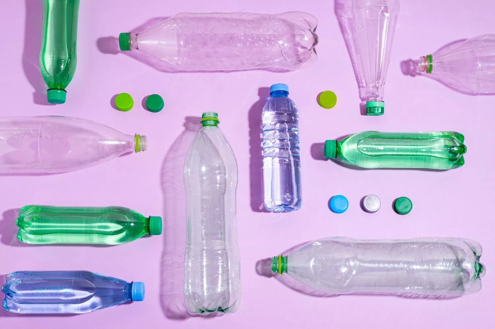
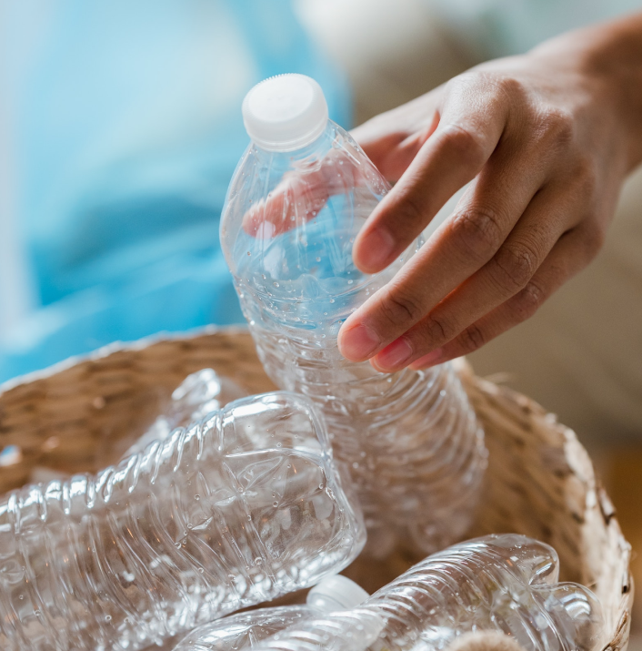
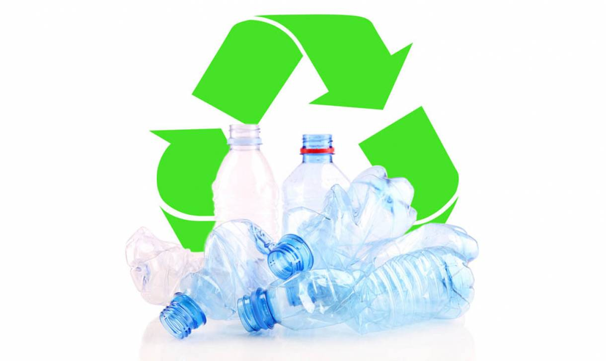
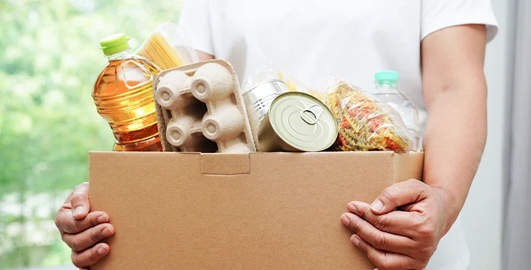

[DESCRIPCION PEC]
INFORMACION DESCRIPCTIVA DEL PROYECTO
¡En el Pec, se busca los botes de basura para encontrar botellas de plásticos o simplemente se llevan la bolsa completa para llevársela a otro lugar para sacarle todo y buscar. Se realizan trabajo en equipo para encontrar más botellas de plástico en los cestos de basura. Al finalizar de encontrar todos los plásticos se toma una foto grupal como evidencia de que ayudaron!

¡IMAGENES!
  
¡EN EL PEC, TAMBIEN SE COLECTA ROPA, JUGUETES Y DESPENSA PARA LOS MAS NECESITADOS!

¡VOLVER A LA PAGINA PRINCIPAL!